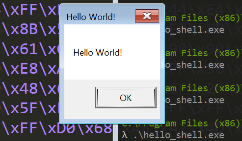
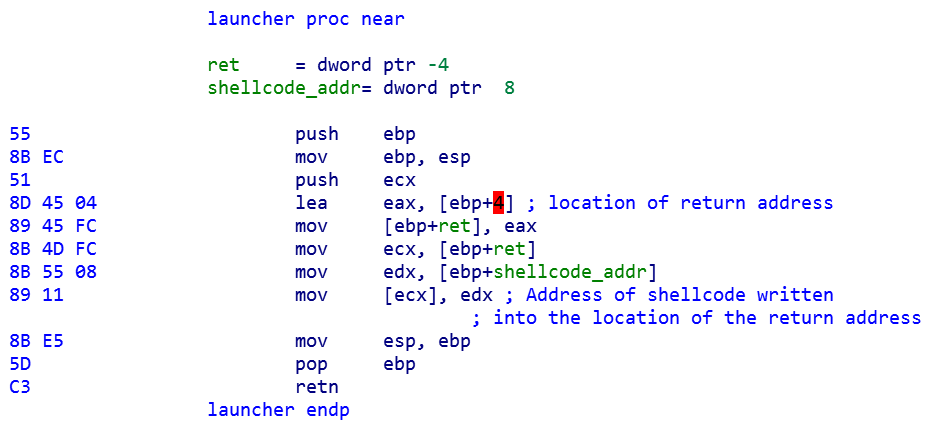

BloG
Windows x86 Shellcode : Using DLL's Pt 2
January 4, 2019
In the last post, I wrote about how to load DLL's and find functions within them. I wrote a position independent method for finding the address of LoadLibraryA and a version of GetProcAddress that takes the base address of a DLL and the ror-13-additive hash of the name of the function you're looking for. We use the hash of strings rather than the strings themselves to save space in our shellcode and to add a thin layer of obfuscation.
This time, I'll be using the functions from the last post to make a Hello World example. The shellcode will load the user32 DLL, find the address of MessageBoxA, and call it with the string "Hello World!" as an argument. We'll then take this shellcode and run it using a very basic buffer overflow.
Writing the Shellcode:
The first thing that we're going to do is call find_kernel32_base. We're then going to push the return value and the hash for LoadLibraryA and call find_function_by_hash. We now should have the address of LoadLibraryA in the eax register; all we need to load user32.dll is to push the string "user32" and call eax.
While we could make a stack string to pass to LoadLibraryA, it will use fewer bytes to include the string "user32" in our shellcode and push the address of the string. Since our shellcode is position independent, this requires finding an address within our shellcode on the fly. There are a couple ways to do this; however, we will use the call/pop method for the sake of simplicity.
Call/Pop:
Recall that when a call instruction is executed, the address of the byte directly following the call is pushed to the stack. In this sense, this
call .targetand this
push eip+7 #constant depends on number of opcode bytes for call
jmp .targetare equivalent. Of course, push eip+7 is an illegal instruction, so we must make use of call. If we execute a call instruction and then execute a pop instruction, we will have a pointer to a location within our shellcode. The following code uses this technique to put a pointer to the string "user32" in eax:
main:
call .target
db 'user32'0
target:
pop eaxWriting Hello_Shell:
We now have all the techniques we need to write our Hello World shellcode! Rather than beating around the bush, I think some annoted assembly would illustrate things best.
main:
call .target
db 'user32'0
db 'Hello World!'0
target:
pop ebp #ebp gets a pointer to 'user32'
call find_kernel32_base
push EC0E4E8E #hash for LoadLibraryA
push eax #kernel32.dll base
call find_function_by_hash #eax now holds the address of LoadLibraryA
push ebp #pass user32 as parameter to LoadLibraryA
call eax
push BC4DA2A8 #hash of MessageBoxA
push eax
call find_function_by_hash #eax now holds the address of MessageBoxA
xor ebx, ebx
add ebp, 7 #ebp now has pointer to 'Hello World!'
push ebx #MessageBox uType = NULL
push ebp #MessageBox lpCaption = 'Hello World!'
push ebp #MsgBox lpText = 'Hello World!'
push ebx #MsgBox hWnd = NULL
call eax #call MessageBoxA
int3Rather than exit the process gracefully here, I'm choosing to add an int3 (0xCC byte) to the end of the shellcode, which will cause the program to crash after MessageBoxA returns. I'm choosing to do this primarily to keep the shellcode as small and simple as possible. I'm also doing this so that we have the option to look at our shellcode in a debugger after we launch it. To do this, we set OllyDbg or an assembly debugger of our choice to be our Just-in-time debugger. (In Olly, it's Options > Debugging > Just-in-time.) Then, when the CPU hits our int3, it will trigger an interrupt and give us a chance to debug the program.
The full shellcode looks like this when assembled:
E8 14 00 00 00 75 73 65 72 33 32 00 48 65 6C 6C
6F 20 57 6F 72 6C 64 21 00 5D E8 70 00 00 00 68
8E 4E 0E EC 50 E8 1A 00 00 00 55 FF D0 68 A8 A2
4D BC 50 E8 0C 00 00 00 31 DB 83 C5 07 53 55 55
53 FF D0 CC 60 8B 6C E4 24 8B 45 3C 8B 54 28 78
01 EA 8B 4A 18 8B 5A 20 01 EB E3 29 49 8B 34 8B
01 EE 6A 00 56 E8 4D 00 00 00 3B 44 E4 28 75 EA
8B 5A 24 01 EB 66 8B 0C 4B 8B 5A 1C 01 EB 8B 04
8B 01 E8 EB 02 31 C0 89 44 E4 1C 61 C2 08 00 56
31 C0 64 8B 40 30 8B 40 0C 8B 70 1C 8B 46 18 6A
01 50 E8 10 00 00 00 3D 6F 29 C0 F3 74 04 8B 36
EB EA 8B 46 08 5E C3 56 57 53 8B 74 E4 10 8B 5C
E4 14 31 FF FC 31 C0 AC 01 DE 38 E0 74 07 C1 CF
0D 01 C7 EB F0 89 F8 5B 5F 5E C2 08 00Let's finally get this to run outside of a debugger!
Launching Shellcode:
Our goal is to load these bytes into process memory, and then set the instruction pointer to the first byte. If we were to follow Aleph One's paper, we would write our shellcode bytes into a buffer with a big nop sled, and then overwrite the the buffer to replace the original return address with a location in our nop sled. The trouble with this technique is that modern operating systems generally don't allow the stack to be executable (for this exact reason). An interrupt will be generated once we try to execute the code we've written to the buffer.
Instead, we're going to allocate a section of memory in the host program using VirtualAlloc, passing the flag PAGE_EXECUTE_READWRITE to ensure that it is executable. We'll then write our shellcode to this section of memory. Now, when we hijack the instruction pointer, our shellcode will be able to execute without generating exceptions. Let's look at the C code now for this shellcode launcher:
#include <stdio.h>
#include <windows.h> //for VirtualAlloc
char shellcode[] = "\xE8\x14\x00\x00\x00\x75\x73\x65\x72\x33\x32\x00\x48\x65"
"\x6C\x6C\x6F\x20\x57\x6F\x72\x6C\x64\x21\x00\x5D\xE8\x70\x00\x00\x00\x68\x8E"
"\x4E\x0E\xEC\x50\xE8\x1A\x00\x00\x00\x55\xFF\xD0\x68\xA8\xA2\x4D\xBC\x50\xE8"
"\x0C\x00\x00\x00\x31\xDB\x83\xC5\x07\x53\x55\x55\x53\xFF\xD0\xCC\x60\x8B\x6C"
"\xE4\x24\x8B\x45\x3C\x8B\x54\x28\x78\x01\xEA\x8B\x4A\x18\x8B\x5A\x20\x01\xEB"
"\xE3\x29\x49\x8B\x34\x8B\x01\xEE\x6A\x00\x56\xE8\x4D\x00\x00\x00\x3B\x44\xE4"
"\x28\x75\xEA\x8B\x5A\x24\x01\xEB\x66\x8B\x0C\x4B\x8B\x5A\x1C\x01\xEB\x8B\x04"
"\x8B\x01\xE8\xEB\x02\x31\xC0\x89\x44\xE4\x1C\x61\xC2\x08\x00\x56\x31\xC0\x64"
"\x8B\x40\x30\x8B\x40\x0C\x8B\x70\x1C\x8B\x46\x18\x6A\x01\x50\xE8\x10\x00\x00"
"\x00\x3D\x6F\x29\xC0\xF3\x74\x04\x8B\x36\xEB\xEA\x8B\x46\x08\x5E\xC3\x56\x57"
"\x53\x8B\x74\xE4\x10\x8B\x5C\xE4\x14\x31\xFF\xFC\x31\xC0\xAC\x01\xDE\x38\xE0"
"\x74\x07\xC1\xCF\x0D\x01\xC7\xEB\xF0\x89\xF8\x5B\x5F\x5E\xC2\x08\x00";
void launcher(void *shellcode_addr){
int *ret;
ret = (int *)&ret+2;
*ret = (int)shellcode_addr;
return;
}
int main(){
void* executable_memory = VirtualAlloc(NULL, 4096,
MEM_RESERVE | MEM_COMMIT, PAGE_EXECUTE_READWRITE);
if(executable_memory == 0){
printf("VirtualAlloc Failed\n");
return 0;
}
memcpy(executable_memory, shellcode, sizeof(shellcode));
launcher(executable_memory);
printf("This line will never be printed\n");
}Let's now look closer at launcher to understand how it sets the instruction pointer to run our shellcode.
Hijacking the Instruction Pointer:
We generally need to use an exploit to get a process that does not belong to us to run our shellcode. Since exploit development is beyond the scope of this post, we have written this shellcode launcher function instead. Let's compile the program and disassemble launcher to understand how it works. I'm using IDA as my disassembler; however, feel free to use something more lightweight.
When the main method calls launcher, it pushes the location of the next instruction to the stack. This is so the computer knows where to return to after it's finished running launcher. Then it jumps to launcher, which disassembles into the following instructions:
Launcher takes the address of the shellcode and writes it to ebp+4, which is where the computer had stored the return address. Now, when the retn instruction is executed, the computer will set its instruction pointer to the first byte of the shellcode, thinking it is simply returning to where it left off before calling launcher. "This line will never be printed" is never printed - instead, the shellcode is run.
Sometimes, compilers write in extra security measures to make sure that the return address isn't changed. For our launcher function to work correctly, we need to make sure that these security measures are not in place. With Visual C++ Command Prompt, we do this by adding the /GS- flag when we compile our program.
Putting it All Together:
While this shellcode will work just fine on a 64-bit version of Windows, it's important that it is run within a 32-bit process. I use the Visual C++ x86 Native Build Tools Command Prompt to compile hello_shell.exe on my 64-bit version of Windows 7. I run "cl hello_shell.c /GS-", and then, switching to a normal Command Prompt, I run ".\hello_shell.exe". You should see a message box appear that says "Hello World!". After clicking "OK", the program will crash (giving you a chance to open it in a debugger if you so wish).
There you have it! We've written and launched a piece of shellcode that uses external libraries. I hope you're pleased.